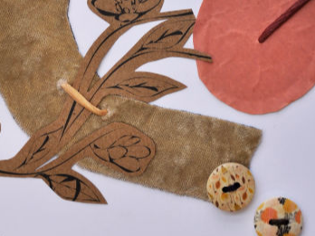

Geknipte Vrouw
Vanuit diverse “tijdschriftenknipsels” creëerden we een nieuw gezicht, een nieuwe identiteit. Hoe zou ik willen zijn? Wat is mijn ideaalbeeld? Dat zijn de vragen die we ons stelden tijdens het samenvoegen van de verschillende elementen.
Spiegelbeeld
We streven naar een -door onszelf opgelegd- ideaalbeeld, waardoor we vaak onszelf niet meer zijn. Spiegels representeren de fysische werkelijkheid (hoe we er ‘werkelijk’ uitzien). We kunnen spiegels zodanig manipuleren dat wat we zien, vervormd wordt en voldoet aan dit ideaalbeeld. Dit fenomeen zien we vaak in kledingwinkels, waar de spiegels ons bedriegen omdat we er dunner door lijken. Door de manipulatie van onszelf aan de hand van spiegels, foto’s, social media, ... kunnen we ons de vraag stellen: Wie zijn wij écht?
Vertaling identiteiten
Aan de hand van kleur, textuur, lettertype, vorm en patroon, creëerde we 5 diverse moodboards die ‘de subjectieve ik’ van elk van ons weergeven. Zo vormen ze als het ware het ontwerpmanifest van de transparante jassen.
Identity Coat
Aan de hand van vijf naar eigen zinnen ontworpen transparante jassen, tonen we de wereld onze subjectieve identiteit. In onze maatschappij zoals we die vandaag de dag kennen lijkt er enkel plaats te zijn voor onze objectieve identiteit terwijl we de subjectieve vaak angstvallig verbergen. Met ons project uiten we kritiek op dit fenomeen en vechten het aan door te tonen hoe het er in een ideale wereld aan toe zou moeten gaan.